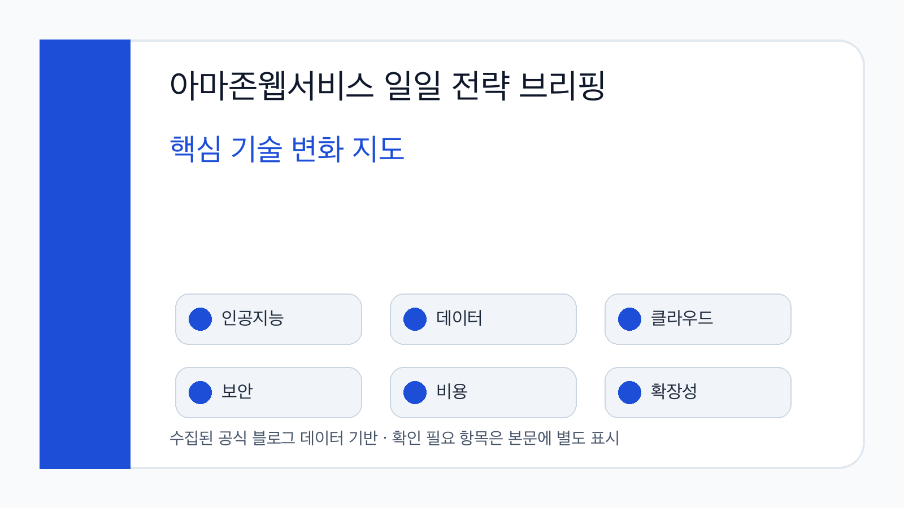
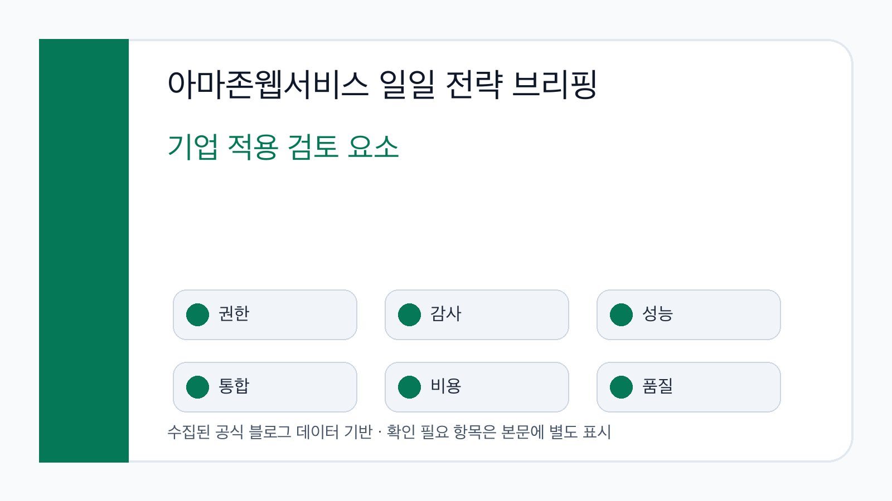
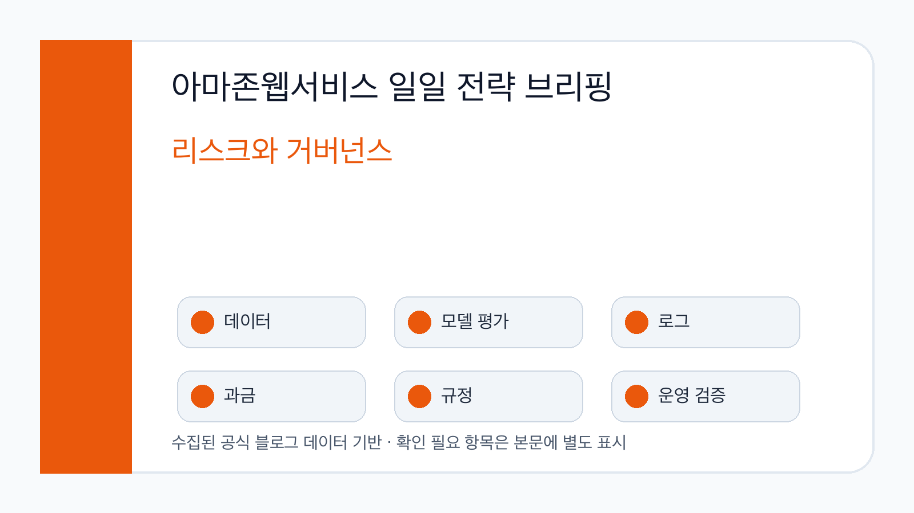

기술 변화의 방향
Kiro CLI 기반 현대화와 SageMaker AI 성능 개선 사례가 함께 관찰됩니다. 공통점은 개발·추론·배포 흐름에서 병목을 줄이고 반복 가능한 실행 패턴을 만들려는 시도입니다.
이번 글은 실제 수집·검증한 AWS 블로그 Markdown과 보강한 한국어 요약을 바탕으로 핵심 트렌드, 기술 변화의 의미, 기업 적용 관점, 한국 기업 시사점, 실행 검토 포인트와 리스크를 정리한 전문 블로그입니다.

Kiro CLI 기반 현대화와 SageMaker AI 성능 개선 사례가 함께 관찰됩니다. 공통점은 개발·추론·배포 흐름에서 병목을 줄이고 반복 가능한 실행 패턴을 만들려는 시도입니다.
기업은 새 기능의 도입 효과를 성능 수치만으로 판단하지 말고 권한, 비용, 로그, 데이터 위치, 기존 배포 체계와의 통합 가능성을 함께 검토해야 합니다.
금융·제조·플랫폼 기업은 무중단 배포, 개인정보, 내부 보안 심사, 비용 통제 기준을 함께 고려해야 합니다. 이번 수집 데이터만으로 산업별 효과를 단정하지 않았습니다.

에잇퍼센트는 Kiro CLI와 AI-Driven Modernization Prompt Sets를 활용해 Amazon EC2 기반 서비스를 Amazon ECS Fargate로 이전하고, 첫 대상 서비스에서 빠른 전환과 비용 절감 가능성을 검증했습니다.
Amazon ECS · AWS Fargate · Kiro CLI · Amazon EC2 · Graviton
원문 열기Amazon SageMaker AI inference에 container image caching이 추가되어 신규 인스턴스 scale-out 상황에서 컨테이너 이미지 다운로드 지연을 줄이고 생성형 AI 모델의 지연 시간을 개선할 수 있다고 설명했습니다.
Amazon SageMaker AI · Amazon ECR · Amazon EC2 · Amazon S3 · Amazon CloudWatch
원문 열기AWS는 P-EAGLE 방식을 통해 speculative decoding의 순차 draft token 병목을 줄이고, Amazon SageMaker AI에서 대규모 언어 모델 추론 처리량과 지연 시간을 개선하는 접근을 제시했습니다.
Amazon SageMaker AI · P-EAGLE · EAGLE · large language models · speculative decoding
원문 열기| 관찰된 변화 | 근거 출처 | 기회 | 리스크와 확인 포인트 |
|---|---|---|---|
| AI 코딩 도구와 컨테이너 기반 현대화가 실제 이전 사례로 제시되었습니다. | 에잇퍼센트 ECS 현대화 글 | 기술부채 해소 속도와 배포 안정성을 함께 개선할 수 있습니다. | 금융 서비스처럼 외부 연동과 무중단 요구가 높은 환경에서는 검증 절차가 필수입니다. |
| SageMaker AI inference scale-out 병목을 줄이는 container caching이 소개되었습니다. | SageMaker AI 컨테이너 캐싱 글 | 피크 트래픽에서 생성형 AI 추론 지연을 줄일 가능성이 있습니다. | 실제 개선 폭은 모델 크기, 컨테이너 이미지, 트래픽 패턴, 리전 조건별 확인이 필요합니다. |
| P-EAGLE이 speculative decoding의 순차 병목을 병렬화하는 접근으로 제시되었습니다. | P-EAGLE 기술 글 | 대규모 언어 모델 추론 처리량과 비용 효율을 개선할 수 있습니다. | 품질 저하 여부, 구현 안정성, 오픈소스 의존성, 운영 모니터링 기준을 확인해야 합니다. |
원문 링크, 발행일, 출시 범위, 프리뷰 여부를 먼저 확인합니다.
현재 데이터·보안·배포 도구와 연결할 때의 변경 비용을 산정합니다.
권한, 로그, 모델 평가, 비용 책임을 의사결정 기준에 포함합니다.

새 기능이 어떤 데이터에 접근하고 어떤 계정 권한을 요구하는지 확인해야 합니다.
자동화와 추론 호출이 늘어날수록 저장소, 네트워크, 모델 사용량의 책임 경계가 중요해집니다.
AI 결과의 오류 감지, 원인 분석, 사용자 피드백 반영 방식을 사전에 정의해야 합니다.
상세 Image Prompt 기록은 같은 날짜 폴더의 image-prompts.md 파일에 보존했습니다. 최종 화면 이미지는 한글 가독성 검증을 위해 로컬 PNG로 다시 그렸습니다.